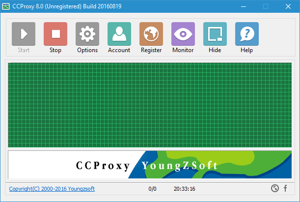
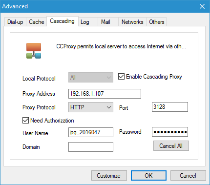
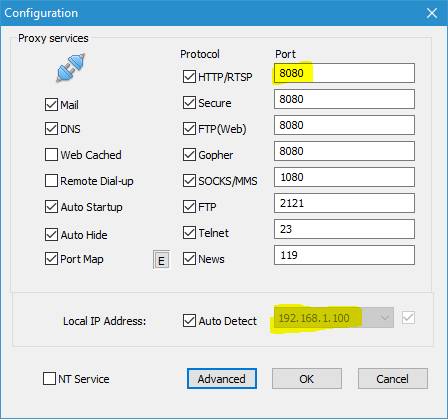
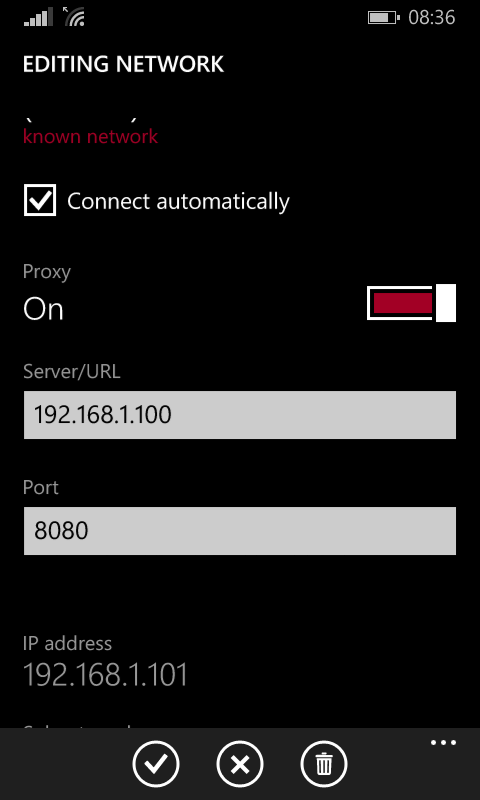

Using Windows Phone on Authenticated Proxy Wifi
No matter how much you like your Windows Phone, you hate it when you reach college where you are provided with authenticated proxy Wi-Fi. All your friends having Android phones enjoy the Wi-Fi while you are left behind.
Here's a way to use the Internet on your Windows Phone:
Connect to the college Wi-Fi on your Windows computer.
Download, Install and Start CCProxy on your Windows computer.
CCProxy is easy-to-use and powerful proxy server.

- Open
Options > Advanced > Cascading.

Check
Enable Cascading Proxy.Fill
Proxy AddressandPort.Select
HTTPasProxy Protocol.Check
Need Authentication.Fill
User NameandPassword.Press
OK.Now in
Options, note the values ofLocal IP AddressandHTTP Port.

Make a Wi-Fi hotspot on your Windows computer. Windows 10 Anniversary Update and later include a built-in Wi-Fi hotspot feature. If you have an older OS, you could use a 3rd party software like Connectify.
Connect your Windows Phone to your computer's Wi-Fi hotspot.
On your Windows Phone, press and hold the name of your computer's Wi-Fi hotspot and click on
Edit.Switch on
Proxy.

Enter values of
ServerandPortnoted in Step 10.Press
done.
Enjoy your college's Wi-Fi on your Windows Phone! Sadly, some apps may still not work, most notably, WhatsApp.